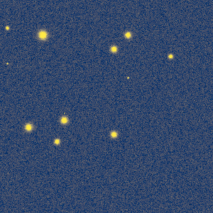
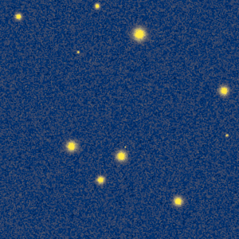
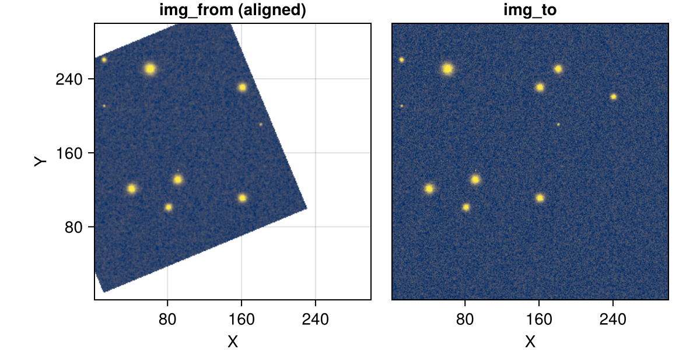
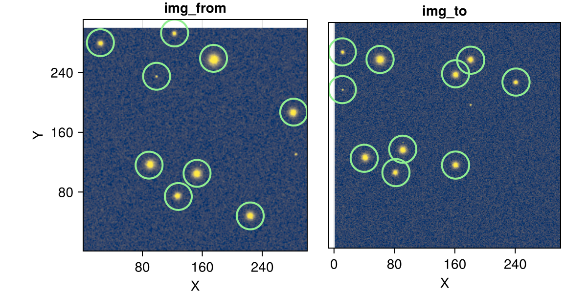
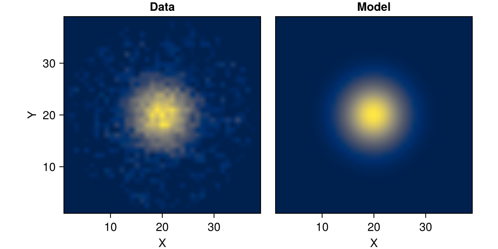
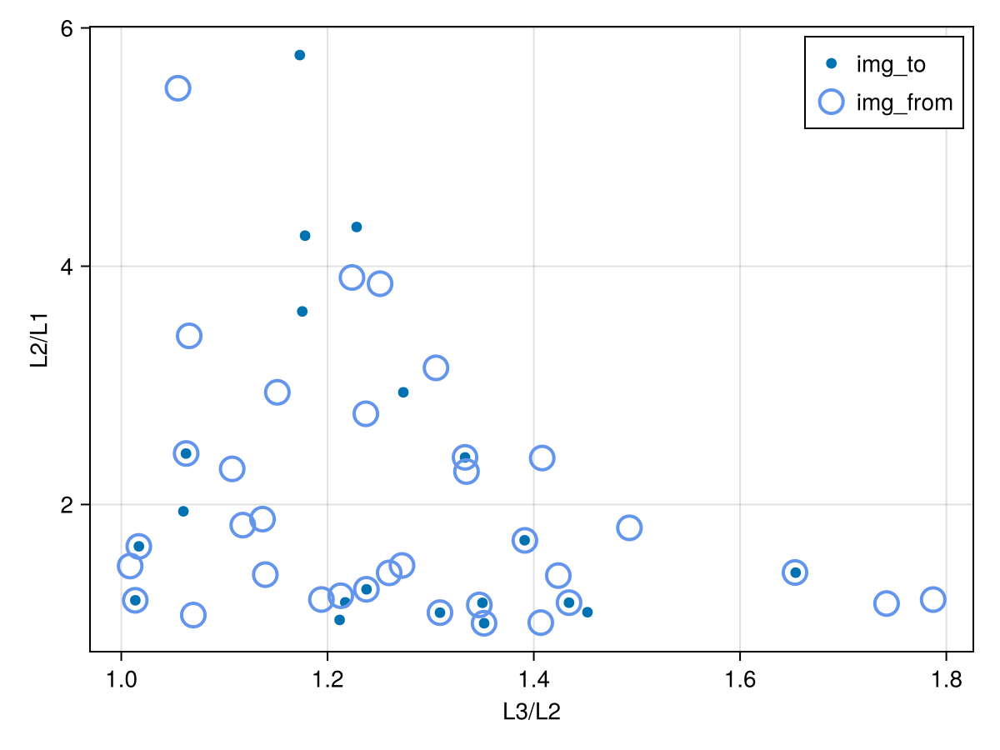
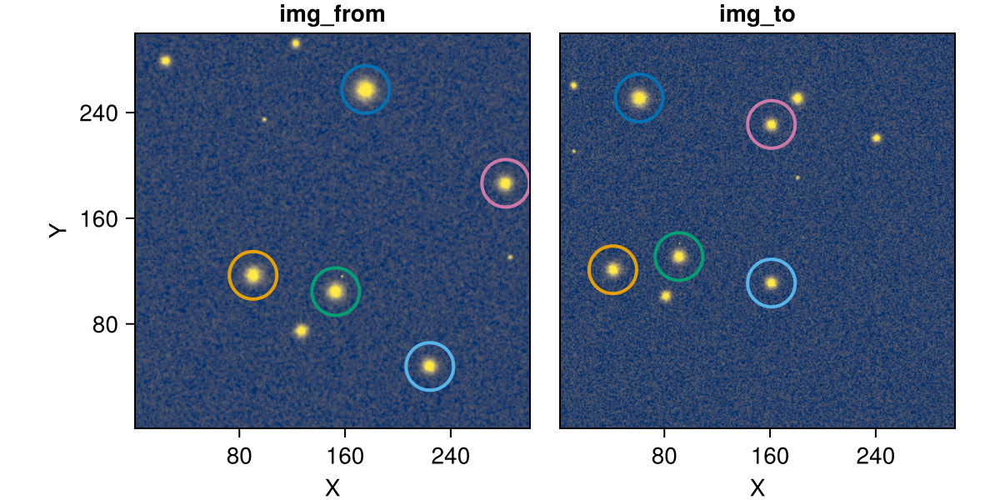

Aligning Astronomical Images
Credit: Beroiz, M., Cabral, J. B., & Sanchez, B. (2020)
Motivation
Aligning images comes up a lot in astronomy, like for co-adding exposures or timeseries photometry. The problem is that it can be computationally expensive to accomplish this via the traditional plate solving approach where we first need to calculate the WCS coordinates in each frame via a routine like astrometry.net, and then perform the relevant coordinate transformations from there.
Enter astroalign.py. This neat Python package sidesteps all of this by directly matching common star patterns between images to build a point-to-point correspondence. This page outlines the Julia reimplementation packaged as JuliaAstro/Astroalign.jl.
How It Works
Beroiz, Cabral, & Sanchez use the fact that triangles can be uniquely characterised to match sets of three stars (asterisms) between images. This point-to-point correspondence then gives everything needed to compute the affine transformation.
For this implementation they use the invariant $\mathscr M$ (the pair of two independent ratios of a triangle's side lengths, $L_i$) to define this unique characterization:
\[\begin{align} &\mathscr M = (L_3/L_2,\ L_2/L_1), \\ &\text{where}\ L_3 > L_2 > L_1\;. \end{align}\]
Astroalign.jl accomplishes this in the following steps:
- Identify the
N_maxbrightest point-like sources inimg_fromandimg_to. - Calculate all triangular asterisms formed from these sources.
- Build a
2 × 3 × 2 × Narray of candidate triangle-level correspondences by matching each from-triangle to its nearest to-triangle in the invariant $\mathscr M$ space. Vertices are assigned via a canonical ordering that is invariant under rotation, so the positional correspondence between matched triangles is geometrically consistent. - Run RANSAC (Fischler & Bolles, 1981) on the triangle matches to robustly identify the largest set of mutually consistent correspondences ("inliers").
- Refine the transformation via the Kabsch/Umeyama least-squares algorithm applied to all vertex pairs from all inlier triangle matches.
- Warp
img_fromto the coordinates ofimg_to.
The rest of this page will show how to align simulated images using this technique.
Packages
Here is a summary of the packages we will use in this walkthrough:
# Main package and visualization packages
using Astroalign, CairoMakie
using AstroImages: AstroImage, Percent, Zscale, set_cmap!
set_cmap!(:cividis)
# Simulated star fields
using Random: Xoshiro
using PSFModels: gaussian
using LinearAlgebra: I, norm
using Rotations: RotMatrix2
using CoordinateTransformations: LinearMap, Translation
using ImageTransformations: Periodic, warpStar field generator ✨
We'll start by creating a simulated star field to align on. For simplicity, we'll just create 12 Gaussian point sources placed randomly in a 300 x 300 grid with some noise over the whole image:
# Modified from
# https://github.com/JuliaAstro/PSFModels.jl/blob/main/test/fitting.jl
function generate_model(rng, model, params, inds)
cartinds = CartesianIndices(inds)
psf = model.(cartinds; params..., amp = 30_000)
noise = rand(rng, 1000:3000, size(psf))
return psf .+ noise
endgenerate_model (generic function with 1 method)img_to = let
# Initial setup
rng = Xoshiro(1)
img_size = (1:300, 1:300)
N_sources = 12
FWHMs = [rand(rng, 1:10) for _ in 1:N_sources]
pad = 10 # Minimum space between the stars (in pixels)
positions_to = rand(rng, 1+pad:pad:300-pad, N_sources, 2)
# Build stars
map(zip(eachrow(positions_to), FWHMs)) do ((x, y), fwhm)
generate_model(rng, gaussian, (; x, y, fwhm), img_size)
end
# We wrap in an `AstroImage` to enable nice plotting recipes
end |> sum |> AstroImage
We'll next create a transformed image that we would like to align back to the original:
# "Truth" values for transformation
const SCALE_0, ROT_0, TRANS_0 = 0.8, π/8, [10, 7]
img_from = let
tfm = Translation(TRANS_0...) ∘
LinearMap(RotMatrix2(ROT_0)) ∘
LinearMap(SCALE_0 * I)
warp(img_to, tfm, axes(img_to); fillvalue = Periodic())
end |> AstroImage
In this particular case, img_from is i) scaled by a factor of 0.8, ii) rotated counter-clockwise by 22.5°, and iii) translated by [10, 7] pixels to arrive at img_to. We will now show how to align this image and recover these initial transformation parameters with Astroalign.jl.
First, here are some convenience functions that we will use to visualize our results:
# Global colorbar lims
const ZMIN, ZMAX = let
lims = Percent(99.5).((img_to, img_from))
minimum(first, lims), maximum(last, lims)
end
set_theme!(;
Axis = (; aspect = DataAspect(), xticks = LinearTicks(4), yticks = LinearTicks(4)),
Image = (; colorrange = (ZMIN, ZMAX), colormap = :cividis),
# For default aperure plots
Scatter = (;
cycle = [], # Disable so that `color` is not overriden
marker = Circle,
markersize = 36, # Roughly the aperture size used
markerspace = :data,
color = :transparent,
strokewidth = 2,
strokecolor = :lightgreen,
),
)
function plot_pair(img_left, img_right;
titles = ["img_left", "img_right"],
colorrange = (ZMIN, ZMAX),
)
fig = Figure(; size = (600, 300), figure_padding = (0, 0, 0, 0))
ax_from, p_from = image(fig[1, 1], AstroImage(img_left); colorrange)
ax_from.title = first(titles)
ax_to, p_to = image(fig[1, 2], AstroImage(img_right); colorrange)
ax_to.title = last(titles)
hideydecorations!(ax_to)
colsize!(fig.layout, 1, Aspect(1, 1.0))
colsize!(fig.layout, 2, Aspect(1, 1.0))
fig
endplot_pair (generic function with 1 method)Usage
We now use the exported align_frame function to align our image:
arr_from_aligned, params_aligned = align_frame(img_from, img_to; scale = true)
nothing
plot_pair(arr_from_aligned, img_to; titles = ["img_from (aligned)", "img_to"])
That's it! See the next section for a brief analysis on how well we did.
Recovered transformation
The transformation object tfm returned by align_frame defines the mapping img_from => img_to:
tfm_aligned = params_aligned.tfmAffineMap([0.7391794416675389 -0.3061623186192738; 0.30616231861927384 0.7391794416675389], [9.983330495694247, 6.9923186064678475])Decomposing it into scale (S), rotation (R), and translation (T) components then gives:
function decompose_tfm(tfm)
M = tfm.linear
S = sqrt(M'M)
R = M * inv(S)
T = tfm.translation
return (; S, R, T)
end
# To compare with "truth" values
p_diff(x, x0) = round(100 * (x - x0) / x0; digits = 3)
p_diff(x::AbstractVector, x0::AbstractVector) = round(100 * norm(x - x0) / norm(x0); digits = 3)
print_diff(name, x, x0) = println(
"$(name) : $(round.(x; digits = 4)) (truth: $(x0), error: $(p_diff(x, x0))%)"
)print_diff (generic function with 1 method)S, R, T = decompose_tfm(tfm_aligned)
params_tfm = (scale = S[1], rot = atan(R[2, 1], R[1, 1]), trans = T)
print_diff("Scale", params_tfm.scale, SCALE_0)
print_diff("Rotation", rad2deg(params_tfm.rot), rad2deg(ROT_0))
print_diff("Translation", params_tfm.trans, TRANS_0)Scale : 0.8001 (truth: 0.8, error: 0.01%)
Rotation : 22.499 (truth: 22.5, error: -0.005%)
Translation : [9.9833, 6.9923] (truth: [10, 7], error: 0.15%)Taking a look at our RANSAC pass, these final transformation values were determined from 10 out of 35 detected correspondences (28.6 %).
n_inliers = length(params_aligned.inlier_idxs)
n_total = size(params_aligned.correspondences, 4)
println("RANSAC inliers: $n_inliers / $n_total ($(round(100*n_inliers/n_total; digits = 1))%)")RANSAC inliers: 10 / 35 (28.6%)The rest of this document will walk through how this is accomplished behind the scenes, and the different options that we can pass to align_frame.
Step 1: Identify control points
This step is done solely on the Photometry.jl side for both our img_from and img_to images, which Astroalign.jl calls with some reasonable defaults via Astroalign._photometry.
# Used by both img_from and img_to
phot_kwargs = let
box_size = Astroalign._compute_box_size(img_to)
(;
box_size,
ap_radius = 0.6 * first(box_size),
min_fwhm = box_size .÷ 5,
nsigma = 1.0,
f = Astroalign.PSF(),
N_max = 10,
use_fitpos = true,
)
end
phot_to, phot_to_params = Astroalign._photometry(img_to; phot_kwargs...)
phot_from, phot_from_params = Astroalign._photometry(img_from; phot_kwargs...)(@NamedTuple{xcenter::Float64, ycenter::Float64, aperture_sum::Float64, aperture_f::@NamedTuple{psf_params::@NamedTuple{x::Float32, y::Float32, fwhm::Tuple{Float32, Float32}}, psf_model::PSFModels.var"#18#19"{Float32, Base.Pairs{Symbol, Any, Nothing, @NamedTuple{x::Float32, y::Float32, fwhm::Tuple{Float32, Float32}}}}, psf_data::Matrix{Float32}}}[(xcenter = 175.53279495239258, ycenter = 257.4830131530762, aperture_sum = 5.066811095980595e6, aperture_f = (psf_params = (x = 20.532795, y = 18.483013, fwhm = (11.928693, 12.204424)), psf_model = PSFModels.var"#18#19"{Float32, Base.Pairs{Symbol, Any, Nothing, @NamedTuple{x::Float32, y::Float32, fwhm::Tuple{Float32, Float32}}}}(Base.Pairs{Symbol, Any, Nothing, @NamedTuple{x::Float32, y::Float32, fwhm::Tuple{Float32, Float32}}}(:x => 20.532795f0, :y => 18.483013f0, :fwhm => (11.928693f0, 12.204424f0))), psf_data = [0.0 -0.0 … -0.0 0.0; -0.0 -0.0 … 0.0 0.0; … ; -0.0 -0.0 … 0.0 0.0; -0.0 -0.0 … 0.0 0.0])), (xcenter = 152.88208198547363, ycenter = 104.46249580383301, aperture_sum = 3.3648372205258943e6, aperture_f = (psf_params = (x = 19.882082, y = 19.462496, fwhm = (9.803934, 9.894921)), psf_model = PSFModels.var"#18#19"{Float32, Base.Pairs{Symbol, Any, Nothing, @NamedTuple{x::Float32, y::Float32, fwhm::Tuple{Float32, Float32}}}}(Base.Pairs{Symbol, Any, Nothing, @NamedTuple{x::Float32, y::Float32, fwhm::Tuple{Float32, Float32}}}(:x => 19.882082f0, :y => 19.462496f0, :fwhm => (9.803934f0, 9.894921f0))), psf_data = [0.0 0.0 … -0.0 -0.0; 0.0 0.0 … -0.0 -0.0; … ; -0.0 -0.0 … -0.0 -0.0; -0.0 -0.0 … -0.0 -0.0])), (xcenter = 90.38871002197266, ycenter = 116.82974624633789, aperture_sum = 3.430283154628014e6, aperture_f = (psf_params = (x = 21.38871, y = 20.829746, fwhm = (9.762655, 9.8510065)), psf_model = PSFModels.var"#18#19"{Float32, Base.Pairs{Symbol, Any, Nothing, @NamedTuple{x::Float32, y::Float32, fwhm::Tuple{Float32, Float32}}}}(Base.Pairs{Symbol, Any, Nothing, @NamedTuple{x::Float32, y::Float32, fwhm::Tuple{Float32, Float32}}}(:x => 21.38871f0, :y => 20.829746f0, :fwhm => (9.762655f0, 9.8510065f0))), psf_data = [-0.0 -0.0 … 0.0 -0.0; 0.0 0.0 … 0.0 0.0; … ; -0.0 -0.0 … 0.0 0.0; -0.0 -0.0 … 0.0 0.0])), (xcenter = 281.5872573852539, ycenter = 186.4873161315918, aperture_sum = 2.6173951166405417e6, aperture_f = (psf_params = (x = 19.587257, y = 19.487316, fwhm = (8.5225525, 8.674346)), psf_model = PSFModels.var"#18#19"{Float32, Base.Pairs{Symbol, Any, Nothing, @NamedTuple{x::Float32, y::Float32, fwhm::Tuple{Float32, Float32}}}}(Base.Pairs{Symbol, Any, Nothing, @NamedTuple{x::Float32, y::Float32, fwhm::Tuple{Float32, Float32}}}(:x => 19.587257f0, :y => 19.487316f0, :fwhm => (8.5225525f0, 8.674346f0))), psf_data = [-0.0 -0.0 … -0.0 0.0; -0.0 0.0 … 0.0 0.0; … ; 0.0 0.0 … -0.0 -0.0; 0.0 0.0 … 0.0 -0.0])), (xcenter = 224.18442726135254, ycenter = 47.83059883117676, aperture_sum = 2.51402308181698e6, aperture_f = (psf_params = (x = 20.184427, y = 19.830599, fwhm = (8.543953, 8.567115)), psf_model = PSFModels.var"#18#19"{Float32, Base.Pairs{Symbol, Any, Nothing, @NamedTuple{x::Float32, y::Float32, fwhm::Tuple{Float32, Float32}}}}(Base.Pairs{Symbol, Any, Nothing, @NamedTuple{x::Float32, y::Float32, fwhm::Tuple{Float32, Float32}}}(:x => 20.184427f0, :y => 19.830599f0, :fwhm => (8.543953f0, 8.567115f0))), psf_data = [-0.0 -0.0 … -0.0 0.0; -0.0 -0.0 … -0.0 -0.0; … ; 0.0 0.0 … 0.0 -0.0; 0.0 0.0 … 0.0 -0.0])), (xcenter = 126.93611717224121, ycenter = 74.53391075134277, aperture_sum = 1.8121249610262665e6, aperture_f = (psf_params = (x = 18.936117, y = 20.53391, fwhm = (7.354856, 7.1804833)), psf_model = PSFModels.var"#18#19"{Float32, Base.Pairs{Symbol, Any, Nothing, @NamedTuple{x::Float32, y::Float32, fwhm::Tuple{Float32, Float32}}}}(Base.Pairs{Symbol, Any, Nothing, @NamedTuple{x::Float32, y::Float32, fwhm::Tuple{Float32, Float32}}}(:x => 18.936117f0, :y => 20.53391f0, :fwhm => (7.354856f0, 7.1804833f0))), psf_data = [-0.0 -0.0 … -0.0 -0.0; 0.0 0.0 … -0.0 -0.0; … ; 0.0 0.0 … -0.0 -0.0; 0.0 0.0 … 0.0 0.0])), (xcenter = 23.75370216369629, ycenter = 279.61986541748047, aperture_sum = 1.1677841484072993e6, aperture_f = (psf_params = (x = 19.753702, y = 19.619865, fwhm = (6.3093367, 6.1032033)), psf_model = PSFModels.var"#18#19"{Float32, Base.Pairs{Symbol, Any, Nothing, @NamedTuple{x::Float32, y::Float32, fwhm::Tuple{Float32, Float32}}}}(Base.Pairs{Symbol, Any, Nothing, @NamedTuple{x::Float32, y::Float32, fwhm::Tuple{Float32, Float32}}}(:x => 19.753702f0, :y => 19.619865f0, :fwhm => (6.3093367f0, 6.1032033f0))), psf_data = [-0.0 -0.0 … -0.0 -0.0; -0.0 0.0 … -0.0 0.0; … ; 0.0 0.0 … 0.0 -0.0; -0.0 0.0 … -0.0 -0.0]))], (sources = [(x = 187, y = 282, value = 31910.75498392784), (x = 48, y = 224, value = 31611.78284105163), (x = 116, y = 89, value = 31448.85977579732), (x = 74, y = 128, value = 31288.059206095317), (x = 259, y = 175, value = 31265.755156632447), (x = 105, y = 153, value = 30495.368152969477), (x = 280, y = 24, value = 29658.540322244273), (x = 235, y = 99, value = 29072.38502866167), (x = 293, y = 123, value = 28679.79152651803)], subt = [-909.2415731757756 -644.6286661319682 … -559.3054958877547 350.22187388814564; -215.67324086020744 -146.79245636952692 … -792.4315466917142 93.7175164961809; … ; -2013.5980328627593 700.9721667843514 … 881.9871524256923 541.7819468876405; -1406.2909580323649 -345.52173762462553 … -63.135625717401126 -566.4463179899794], bkg = [24259.08519263267 24259.08519263267 … 23928.04349016369 23928.04349016369; 24259.08519263267 24259.08519263267 … 23928.04349016369 23928.04349016369; … ; 24212.53091791701 24212.53091791701 … 24306.503027242627 24306.503027242627; 24212.53091791701 24212.53091791701 … 24306.503027242627 24306.503027242627], bkg_rms = [1051.2554984178919 1051.2554984178919 … 1018.5302778375594 1018.5302778375594; 1051.2554984178919 1051.2554984178919 … 1018.5302778375594 1018.5302778375594; … ; 1077.6616812103377 1077.6616812103377 … 1071.9551128818398 1071.9551128818398; 1077.6616812103377 1077.6616812103377 … 1071.9551128818398 1071.9551128818398], aps = Photometry.Aperture.CircularAperture{Float64}[CircularAperture(282.0, 187.0, r=18.599999999999998), CircularAperture(224.0, 48.0, r=18.599999999999998), CircularAperture(89.0, 116.0, r=18.599999999999998), CircularAperture(128.0, 74.0, r=18.599999999999998), CircularAperture(175.0, 259.0, r=18.599999999999998), CircularAperture(153.0, 105.0, r=18.599999999999998), CircularAperture(24.0, 280.0, r=18.599999999999998), CircularAperture(99.0, 235.0, r=18.599999999999998), CircularAperture(123.0, 293.0, r=18.599999999999998)]))This performs source extraction and source characterization of our images, storing the results in the phot_from_params and phot_to_params named tuples above. Here is a preview of the detected soures in each image:
fig = plot_pair(img_from, img_to; titles = ["img_from", "img_to"])
# Show apertures
scatter!(fig.content[1], phot_from_params.sources.y, phot_from_params.sources.x)
scatter!(fig.content[2], phot_to_params.sources.y, phot_to_params.sources.x)
fig
Source extraction
astroalign.py uses sep under the hood for its source extraction. We use Photometry.Detection.extract_sources to pull out the regions around the brightest pixels and PSFModels.fit to fit PSF models to each detected source, allowing us to pick out the ones that look like stars (vs. hot pixels, artifacts, etc.). This process is executed by Astroalign._get_sources.
In the future, additional photometry options may be added.
Source characterization
Photometry.Aperture.photometry automatically computes aperture sums and returns them in a nice table for us. We also pass a function, Astroalign.PSF, to compute some PSF statistics for each source and stores them in the table as well.
Some PSF model fits may not converge for especially noisy data. Data cleaning / pre-procesing is outside the scope of this package.
In addition to the usual photometry fields returned, the aperture_f field contains a named tuple of PSF information computed by default with the Astroalign.PSF() callable:
psf_params: Named tuple ofxandycenter, andfwhmof fitted PSF relative to its aperture.psf_model: The best fit PSF model. Uses aPSFModels.gaussianby default.psf_data: The underlying intersection array of the data within the aperture being fit.
The same parameters passed to PSFModels.fit can also be passed to Astroalign.PSF().
Below is a quick visual check comparing an observed point source with its fitted PSF model:
function inspect_psf(phot; kwargs...)
psf_data, psf_model = phot.aperture_f.psf_data, phot.aperture_f.psf_model
println((; phot.xcenter, phot.ycenter))
println(phot.aperture_f.psf_params)
obs = AstroImage(psf_data)
psf = AstroImage(psf_model.(CartesianIndices(psf_data)))
plot_pair(obs, psf; kwargs...)
end
inspect_psf(first(phot_to); colorrange = (0, 1), titles = ["Data", "Model"])
PSF centers are relative to the aperture, while xcenter and ycenter are relative to the whole image. Astroalign.jl performs the necessary conversions from the former to the latter in Astroalign.to_subpixel before reporting the final fitted values.
With out sources identified, we now turn to the next step in the alignment algorithm.
Step 2: Calculate invariants
This is done internally in align_frame, but the invariants $\mathscr M_i$ can also be exposed with Astroalign._triangle_invariants.
C_to, ℳ_to = Astroalign._triangle_invariants(phot_to)
# This can also be accessed through the named tuple
# returned by `Astroalign.align_frame`.
(; C_from, ℳ_from) = params_aligned(point_map = [[175.53279495239258, 257.4830131530762] => [60.89677810668945, 251.05743598937988], [90.38871002197266, 116.82974624633789] => [41.02081871032715, 121.02961349487305], [152.88208198547363, 104.46249580383301] => [91.02450370788574, 131.00497817993164], [281.5872573852539, 186.4873161315918] => [161.03816413879395, 231.05370712280273], [224.18442726135254, 47.83059883117676] => [161.04116249084473, 110.98977851867676]], tfm = AffineMap([0.7391794416675389 -0.3061623186192738; 0.30616231861927384 0.7391794416675389], [9.983330495694247, 6.9923186064678475]), correspondences = [175.53279495239258 90.38871002197266 152.88208198547363; 257.4830131530762 116.82974624633789 104.46249580383301;;; 60.89677810668945 41.02081871032715 91.02450370788574; 251.05743598937988 121.02961349487305 131.00497817993164;;;; 175.53279495239258 152.88208198547363 281.5872573852539; 257.4830131530762 104.46249580383301 186.4873161315918;;; 60.89677810668945 91.02450370788574 161.03816413879395; 251.05743598937988 131.00497817993164 231.05370712280273;;;; 224.18442726135254 175.53279495239258 152.88208198547363; 47.83059883117676 257.4830131530762 104.46249580383301;;; 161.04116249084473 60.89677810668945 91.02450370788574; 110.98977851867676 251.05743598937988 131.00497817993164;;;; … ;;;; 23.75370216369629 224.18442726135254 281.5872573852539; 279.61986541748047 47.83059883117676 186.4873161315918;;; 180.93900108337402 91.02450370788574 161.04116249084473; 251.04400444030762 131.00497817993164 110.98977851867676;;;; 281.5872573852539 23.75370216369629 126.93611717224121; 186.4873161315918 279.61986541748047 74.53391075134277;;; 60.89677810668945 161.04116249084473 180.93900108337402; 251.05743598937988 110.98977851867676 251.04400444030762;;;; 224.18442726135254 23.75370216369629 126.93611717224121; 47.83059883117676 279.61986541748047 74.53391075134277;;; 161.03816413879395 41.02081871032715 91.02450370788574; 231.05370712280273 121.02961349487305 131.00497817993164], inlier_idxs = [1, 2, 3, 6, 7, 10, 16, 17, 20, 26], C_from = Base.Generator{Combinatorics.Combinations, Combinatorics.var"#combinations##3#combinations##4"{Combinatorics.var"#reorder#combinations##0"{TypedTables.Table{@NamedTuple{xcenter::Float64, ycenter::Float64, aperture_sum::Float64, aperture_f::@NamedTuple{psf_params::@NamedTuple{x::Float32, y::Float32, fwhm::Tuple{Float32, Float32}}, psf_model::PSFModels.var"#18#19"{Float32, Base.Pairs{Symbol, Any, Nothing, @NamedTuple{x::Float32, y::Float32, fwhm::Tuple{Float32, Float32}}}}, psf_data::Matrix{Float32}}}, 1, @NamedTuple{xcenter::Vector{Float64}, ycenter::Vector{Float64}, aperture_sum::Vector{Float64}, aperture_f::Vector{@NamedTuple{psf_params::@NamedTuple{x::Float32, y::Float32, fwhm::Tuple{Float32, Float32}}, psf_model::PSFModels.var"#18#19"{Float32, Base.Pairs{Symbol, Any, Nothing, @NamedTuple{x::Float32, y::Float32, fwhm::Tuple{Float32, Float32}}}}, psf_data::Matrix{Float32}}}}}}}}(Combinatorics.var"#combinations##3#combinations##4"{Combinatorics.var"#reorder#combinations##0"{TypedTables.Table{@NamedTuple{xcenter::Float64, ycenter::Float64, aperture_sum::Float64, aperture_f::@NamedTuple{psf_params::@NamedTuple{x::Float32, y::Float32, fwhm::Tuple{Float32, Float32}}, psf_model::PSFModels.var"#18#19"{Float32, Base.Pairs{Symbol, Any, Nothing, @NamedTuple{x::Float32, y::Float32, fwhm::Tuple{Float32, Float32}}}}, psf_data::Matrix{Float32}}}, 1, @NamedTuple{xcenter::Vector{Float64}, ycenter::Vector{Float64}, aperture_sum::Vector{Float64}, aperture_f::Vector{@NamedTuple{psf_params::@NamedTuple{x::Float32, y::Float32, fwhm::Tuple{Float32, Float32}}, psf_model::PSFModels.var"#18#19"{Float32, Base.Pairs{Symbol, Any, Nothing, @NamedTuple{x::Float32, y::Float32, fwhm::Tuple{Float32, Float32}}}}, psf_data::Matrix{Float32}}}}}}}(Combinatorics.var"#reorder#combinations##0"{TypedTables.Table{@NamedTuple{xcenter::Float64, ycenter::Float64, aperture_sum::Float64, aperture_f::@NamedTuple{psf_params::@NamedTuple{x::Float32, y::Float32, fwhm::Tuple{Float32, Float32}}, psf_model::PSFModels.var"#18#19"{Float32, Base.Pairs{Symbol, Any, Nothing, @NamedTuple{x::Float32, y::Float32, fwhm::Tuple{Float32, Float32}}}}, psf_data::Matrix{Float32}}}, 1, @NamedTuple{xcenter::Vector{Float64}, ycenter::Vector{Float64}, aperture_sum::Vector{Float64}, aperture_f::Vector{@NamedTuple{psf_params::@NamedTuple{x::Float32, y::Float32, fwhm::Tuple{Float32, Float32}}, psf_model::PSFModels.var"#18#19"{Float32, Base.Pairs{Symbol, Any, Nothing, @NamedTuple{x::Float32, y::Float32, fwhm::Tuple{Float32, Float32}}}}, psf_data::Matrix{Float32}}}}}}(@NamedTuple{xcenter::Float64, ycenter::Float64, aperture_sum::Float64, aperture_f::@NamedTuple{psf_params::@NamedTuple{x::Float32, y::Float32, fwhm::Tuple{Float32, Float32}}, psf_model::PSFModels.var"#18#19"{Float32, Base.Pairs{Symbol, Any, Nothing, @NamedTuple{x::Float32, y::Float32, fwhm::Tuple{Float32, Float32}}}}, psf_data::Matrix{Float32}}}[(xcenter = 175.53279495239258, ycenter = 257.4830131530762, aperture_sum = 5.066811095980595e6, aperture_f = (psf_params = (x = 20.532795, y = 18.483013, fwhm = (11.928693, 12.204424)), psf_model = PSFModels.var"#18#19"{Float32, Base.Pairs{Symbol, Any, Nothing, @NamedTuple{x::Float32, y::Float32, fwhm::Tuple{Float32, Float32}}}}(Base.Pairs{Symbol, Any, Nothing, @NamedTuple{x::Float32, y::Float32, fwhm::Tuple{Float32, Float32}}}(:x => 20.532795f0, :y => 18.483013f0, :fwhm => (11.928693f0, 12.204424f0))), psf_data = [0.0 -0.0 … -0.0 0.0; -0.0 -0.0 … 0.0 0.0; … ; -0.0 -0.0 … 0.0 0.0; -0.0 -0.0 … 0.0 0.0])), (xcenter = 152.88208198547363, ycenter = 104.46249580383301, aperture_sum = 3.3648372205258943e6, aperture_f = (psf_params = (x = 19.882082, y = 19.462496, fwhm = (9.803934, 9.894921)), psf_model = PSFModels.var"#18#19"{Float32, Base.Pairs{Symbol, Any, Nothing, @NamedTuple{x::Float32, y::Float32, fwhm::Tuple{Float32, Float32}}}}(Base.Pairs{Symbol, Any, Nothing, @NamedTuple{x::Float32, y::Float32, fwhm::Tuple{Float32, Float32}}}(:x => 19.882082f0, :y => 19.462496f0, :fwhm => (9.803934f0, 9.894921f0))), psf_data = [0.0 0.0 … -0.0 -0.0; 0.0 0.0 … -0.0 -0.0; … ; -0.0 -0.0 … -0.0 -0.0; -0.0 -0.0 … -0.0 -0.0])), (xcenter = 90.38871002197266, ycenter = 116.82974624633789, aperture_sum = 3.430283154628014e6, aperture_f = (psf_params = (x = 21.38871, y = 20.829746, fwhm = (9.762655, 9.8510065)), psf_model = PSFModels.var"#18#19"{Float32, Base.Pairs{Symbol, Any, Nothing, @NamedTuple{x::Float32, y::Float32, fwhm::Tuple{Float32, Float32}}}}(Base.Pairs{Symbol, Any, Nothing, @NamedTuple{x::Float32, y::Float32, fwhm::Tuple{Float32, Float32}}}(:x => 21.38871f0, :y => 20.829746f0, :fwhm => (9.762655f0, 9.8510065f0))), psf_data = [-0.0 -0.0 … 0.0 -0.0; 0.0 0.0 … 0.0 0.0; … ; -0.0 -0.0 … 0.0 0.0; -0.0 -0.0 … 0.0 0.0])), (xcenter = 281.5872573852539, ycenter = 186.4873161315918, aperture_sum = 2.6173951166405417e6, aperture_f = (psf_params = (x = 19.587257, y = 19.487316, fwhm = (8.5225525, 8.674346)), psf_model = PSFModels.var"#18#19"{Float32, Base.Pairs{Symbol, Any, Nothing, @NamedTuple{x::Float32, y::Float32, fwhm::Tuple{Float32, Float32}}}}(Base.Pairs{Symbol, Any, Nothing, @NamedTuple{x::Float32, y::Float32, fwhm::Tuple{Float32, Float32}}}(:x => 19.587257f0, :y => 19.487316f0, :fwhm => (8.5225525f0, 8.674346f0))), psf_data = [-0.0 -0.0 … -0.0 0.0; -0.0 0.0 … 0.0 0.0; … ; 0.0 0.0 … -0.0 -0.0; 0.0 0.0 … 0.0 -0.0])), (xcenter = 224.18442726135254, ycenter = 47.83059883117676, aperture_sum = 2.51402308181698e6, aperture_f = (psf_params = (x = 20.184427, y = 19.830599, fwhm = (8.543953, 8.567115)), psf_model = PSFModels.var"#18#19"{Float32, Base.Pairs{Symbol, Any, Nothing, @NamedTuple{x::Float32, y::Float32, fwhm::Tuple{Float32, Float32}}}}(Base.Pairs{Symbol, Any, Nothing, @NamedTuple{x::Float32, y::Float32, fwhm::Tuple{Float32, Float32}}}(:x => 20.184427f0, :y => 19.830599f0, :fwhm => (8.543953f0, 8.567115f0))), psf_data = [-0.0 -0.0 … -0.0 0.0; -0.0 -0.0 … -0.0 -0.0; … ; 0.0 0.0 … 0.0 -0.0; 0.0 0.0 … 0.0 -0.0])), (xcenter = 126.93611717224121, ycenter = 74.53391075134277, aperture_sum = 1.8121249610262665e6, aperture_f = (psf_params = (x = 18.936117, y = 20.53391, fwhm = (7.354856, 7.1804833)), psf_model = PSFModels.var"#18#19"{Float32, Base.Pairs{Symbol, Any, Nothing, @NamedTuple{x::Float32, y::Float32, fwhm::Tuple{Float32, Float32}}}}(Base.Pairs{Symbol, Any, Nothing, @NamedTuple{x::Float32, y::Float32, fwhm::Tuple{Float32, Float32}}}(:x => 18.936117f0, :y => 20.53391f0, :fwhm => (7.354856f0, 7.1804833f0))), psf_data = [-0.0 -0.0 … -0.0 -0.0; 0.0 0.0 … -0.0 -0.0; … ; 0.0 0.0 … -0.0 -0.0; 0.0 0.0 … 0.0 0.0])), (xcenter = 23.75370216369629, ycenter = 279.61986541748047, aperture_sum = 1.1677841484072993e6, aperture_f = (psf_params = (x = 19.753702, y = 19.619865, fwhm = (6.3093367, 6.1032033)), psf_model = PSFModels.var"#18#19"{Float32, Base.Pairs{Symbol, Any, Nothing, @NamedTuple{x::Float32, y::Float32, fwhm::Tuple{Float32, Float32}}}}(Base.Pairs{Symbol, Any, Nothing, @NamedTuple{x::Float32, y::Float32, fwhm::Tuple{Float32, Float32}}}(:x => 19.753702f0, :y => 19.619865f0, :fwhm => (6.3093367f0, 6.1032033f0))), psf_data = [-0.0 -0.0 … -0.0 -0.0; -0.0 0.0 … -0.0 0.0; … ; 0.0 0.0 … 0.0 -0.0; -0.0 0.0 … -0.0 -0.0]))])), Combinatorics.Combinations(7, 3)), ℳ_from = [1.0628934830953316 1.0135440848786477 … 1.1940875316611947 1.3347388799744455; 2.4281772435198006 1.1958605234419053 … 1.2024903118084311 2.276494858304598], C_to = Base.Generator{Combinatorics.Combinations, Combinatorics.var"#combinations##3#combinations##4"{Combinatorics.var"#reorder#combinations##0"{TypedTables.Table{@NamedTuple{xcenter::Float64, ycenter::Float64, aperture_sum::Float64, aperture_f::@NamedTuple{psf_params::@NamedTuple{x::Float32, y::Float32, fwhm::Tuple{Float32, Float32}}, psf_model::PSFModels.var"#18#19"{Float32, Base.Pairs{Symbol, Any, Nothing, @NamedTuple{x::Float32, y::Float32, fwhm::Tuple{Float32, Float32}}}}, psf_data::Matrix{Float32}}}, 1, @NamedTuple{xcenter::Vector{Float64}, ycenter::Vector{Float64}, aperture_sum::Vector{Float64}, aperture_f::Vector{@NamedTuple{psf_params::@NamedTuple{x::Float32, y::Float32, fwhm::Tuple{Float32, Float32}}, psf_model::PSFModels.var"#18#19"{Float32, Base.Pairs{Symbol, Any, Nothing, @NamedTuple{x::Float32, y::Float32, fwhm::Tuple{Float32, Float32}}}}, psf_data::Matrix{Float32}}}}}}}}(Combinatorics.var"#combinations##3#combinations##4"{Combinatorics.var"#reorder#combinations##0"{TypedTables.Table{@NamedTuple{xcenter::Float64, ycenter::Float64, aperture_sum::Float64, aperture_f::@NamedTuple{psf_params::@NamedTuple{x::Float32, y::Float32, fwhm::Tuple{Float32, Float32}}, psf_model::PSFModels.var"#18#19"{Float32, Base.Pairs{Symbol, Any, Nothing, @NamedTuple{x::Float32, y::Float32, fwhm::Tuple{Float32, Float32}}}}, psf_data::Matrix{Float32}}}, 1, @NamedTuple{xcenter::Vector{Float64}, ycenter::Vector{Float64}, aperture_sum::Vector{Float64}, aperture_f::Vector{@NamedTuple{psf_params::@NamedTuple{x::Float32, y::Float32, fwhm::Tuple{Float32, Float32}}, psf_model::PSFModels.var"#18#19"{Float32, Base.Pairs{Symbol, Any, Nothing, @NamedTuple{x::Float32, y::Float32, fwhm::Tuple{Float32, Float32}}}}, psf_data::Matrix{Float32}}}}}}}(Combinatorics.var"#reorder#combinations##0"{TypedTables.Table{@NamedTuple{xcenter::Float64, ycenter::Float64, aperture_sum::Float64, aperture_f::@NamedTuple{psf_params::@NamedTuple{x::Float32, y::Float32, fwhm::Tuple{Float32, Float32}}, psf_model::PSFModels.var"#18#19"{Float32, Base.Pairs{Symbol, Any, Nothing, @NamedTuple{x::Float32, y::Float32, fwhm::Tuple{Float32, Float32}}}}, psf_data::Matrix{Float32}}}, 1, @NamedTuple{xcenter::Vector{Float64}, ycenter::Vector{Float64}, aperture_sum::Vector{Float64}, aperture_f::Vector{@NamedTuple{psf_params::@NamedTuple{x::Float32, y::Float32, fwhm::Tuple{Float32, Float32}}, psf_model::PSFModels.var"#18#19"{Float32, Base.Pairs{Symbol, Any, Nothing, @NamedTuple{x::Float32, y::Float32, fwhm::Tuple{Float32, Float32}}}}, psf_data::Matrix{Float32}}}}}}(@NamedTuple{xcenter::Float64, ycenter::Float64, aperture_sum::Float64, aperture_f::@NamedTuple{psf_params::@NamedTuple{x::Float32, y::Float32, fwhm::Tuple{Float32, Float32}}, psf_model::PSFModels.var"#18#19"{Float32, Base.Pairs{Symbol, Any, Nothing, @NamedTuple{x::Float32, y::Float32, fwhm::Tuple{Float32, Float32}}}}, psf_data::Matrix{Float32}}}[(xcenter = 60.89677810668945, ycenter = 251.05743598937988, aperture_sum = 3.2353000059753284e6, aperture_f = (psf_params = (x = 19.896778, y = 20.057436, fwhm = (9.532582, 9.676154)), psf_model = PSFModels.var"#18#19"{Float32, Base.Pairs{Symbol, Any, Nothing, @NamedTuple{x::Float32, y::Float32, fwhm::Tuple{Float32, Float32}}}}(Base.Pairs{Symbol, Any, Nothing, @NamedTuple{x::Float32, y::Float32, fwhm::Tuple{Float32, Float32}}}(:x => 19.896778f0, :y => 20.057436f0, :fwhm => (9.532582f0, 9.676154f0))), psf_data = [0.0 0.0 … 0.0 -0.0; -0.0 0.0 … 0.0 0.0; … ; -0.0 0.0 … 0.0 0.0; 0.0 -0.0 … 0.0 0.0])), (xcenter = 91.02450370788574, ycenter = 131.00497817993164, aperture_sum = 2.354980277806911e6, aperture_f = (psf_params = (x = 20.024504, y = 19.004978, fwhm = (7.7084966, 7.8933125)), psf_model = PSFModels.var"#18#19"{Float32, Base.Pairs{Symbol, Any, Nothing, @NamedTuple{x::Float32, y::Float32, fwhm::Tuple{Float32, Float32}}}}(Base.Pairs{Symbol, Any, Nothing, @NamedTuple{x::Float32, y::Float32, fwhm::Tuple{Float32, Float32}}}(:x => 20.024504f0, :y => 19.004978f0, :fwhm => (7.7084966f0, 7.8933125f0))), psf_data = [0.0 -0.0 … 0.0 -0.0; 0.0 0.0 … -0.0 -0.0; … ; 0.0 -0.0 … -0.0 -0.0; -0.0 -0.0 … -0.0 -0.0])), (xcenter = 41.02081871032715, ycenter = 121.02961349487305, aperture_sum = 2.147288646406777e6, aperture_f = (psf_params = (x = 21.020819, y = 21.029613, fwhm = (7.676704, 7.8549423)), psf_model = PSFModels.var"#18#19"{Float32, Base.Pairs{Symbol, Any, Nothing, @NamedTuple{x::Float32, y::Float32, fwhm::Tuple{Float32, Float32}}}}(Base.Pairs{Symbol, Any, Nothing, @NamedTuple{x::Float32, y::Float32, fwhm::Tuple{Float32, Float32}}}(:x => 21.020819f0, :y => 21.029613f0, :fwhm => (7.676704f0, 7.8549423f0))), psf_data = [0.0 0.0 … -0.0 -0.0; 0.0 -0.0 … 0.0 -0.0; … ; 0.0 0.0 … 0.0 -0.0; -0.0 0.0 … -0.0 0.0])), (xcenter = 180.93900108337402, ycenter = 251.04400444030762, aperture_sum = 1.4110046147113673e6, aperture_f = (psf_params = (x = 19.939001, y = 21.044004, fwhm = (6.9445353, 7.0493674)), psf_model = PSFModels.var"#18#19"{Float32, Base.Pairs{Symbol, Any, Nothing, @NamedTuple{x::Float32, y::Float32, fwhm::Tuple{Float32, Float32}}}}(Base.Pairs{Symbol, Any, Nothing, @NamedTuple{x::Float32, y::Float32, fwhm::Tuple{Float32, Float32}}}(:x => 19.939001f0, :y => 21.044004f0, :fwhm => (6.9445353f0, 7.0493674f0))), psf_data = [0.0 0.0 … 0.0 -0.0; 0.0 0.0 … 0.0 -0.0; … ; -0.0 -0.0 … 0.0 0.0; 0.0 0.0 … -0.0 0.0])), (xcenter = 161.04116249084473, ycenter = 110.98977851867676, aperture_sum = 1.4074609870572893e6, aperture_f = (psf_params = (x = 20.041162, y = 19.989779, fwhm = (6.7587943, 6.6772118)), psf_model = PSFModels.var"#18#19"{Float32, Base.Pairs{Symbol, Any, Nothing, @NamedTuple{x::Float32, y::Float32, fwhm::Tuple{Float32, Float32}}}}(Base.Pairs{Symbol, Any, Nothing, @NamedTuple{x::Float32, y::Float32, fwhm::Tuple{Float32, Float32}}}(:x => 20.041162f0, :y => 19.989779f0, :fwhm => (6.7587943f0, 6.6772118f0))), psf_data = [0.0 -0.0 … 0.0 -0.0; -0.0 -0.0 … -0.0 0.0; … ; -0.0 0.0 … -0.0 -0.0; 0.0 -0.0 … -0.0 -0.0])), (xcenter = 161.03816413879395, ycenter = 231.05370712280273, aperture_sum = 1.4279039899237864e6, aperture_f = (psf_params = (x = 20.038164, y = 19.053707, fwhm = (6.61488, 6.7330456)), psf_model = PSFModels.var"#18#19"{Float32, Base.Pairs{Symbol, Any, Nothing, @NamedTuple{x::Float32, y::Float32, fwhm::Tuple{Float32, Float32}}}}(Base.Pairs{Symbol, Any, Nothing, @NamedTuple{x::Float32, y::Float32, fwhm::Tuple{Float32, Float32}}}(:x => 20.038164f0, :y => 19.053707f0, :fwhm => (6.61488f0, 6.7330456f0))), psf_data = [0.0 0.0 … 0.0 0.0; 0.0 -0.0 … 0.0 0.0; … ; 0.0 -0.0 … 0.0 0.0; 0.0 0.0 … 0.0 0.0]))])), Combinatorics.Combinations(6, 3)), ℳ_to = [1.062719203553275 1.2117135171269091 … 1.3518590480886885 1.1782109147961288; 2.4274868874461455 1.0310962628392046 … 1.0031283731151421 4.25647483834551], phot_from_params = (sources = [(x = 187, y = 282, value = 31910.75498392784), (x = 48, y = 224, value = 31611.78284105163), (x = 116, y = 89, value = 31448.85977579732), (x = 74, y = 128, value = 31288.059206095317), (x = 259, y = 175, value = 31265.755156632447), (x = 105, y = 153, value = 30495.368152969477), (x = 280, y = 24, value = 29658.540322244273), (x = 235, y = 99, value = 29072.38502866167), (x = 293, y = 123, value = 28679.79152651803)], subt = [-909.2415731757756 -644.6286661319682 … -559.3054958877547 350.22187388814564; -215.67324086020744 -146.79245636952692 … -792.4315466917142 93.7175164961809; … ; -2013.5980328627593 700.9721667843514 … 881.9871524256923 541.7819468876405; -1406.2909580323649 -345.52173762462553 … -63.135625717401126 -566.4463179899794], bkg = [24259.08519263267 24259.08519263267 … 23928.04349016369 23928.04349016369; 24259.08519263267 24259.08519263267 … 23928.04349016369 23928.04349016369; … ; 24212.53091791701 24212.53091791701 … 24306.503027242627 24306.503027242627; 24212.53091791701 24212.53091791701 … 24306.503027242627 24306.503027242627], bkg_rms = [1051.2554984178919 1051.2554984178919 … 1018.5302778375594 1018.5302778375594; 1051.2554984178919 1051.2554984178919 … 1018.5302778375594 1018.5302778375594; … ; 1077.6616812103377 1077.6616812103377 … 1071.9551128818398 1071.9551128818398; 1077.6616812103377 1077.6616812103377 … 1071.9551128818398 1071.9551128818398], aps = Photometry.Aperture.CircularAperture{Float64}[CircularAperture(282.0, 187.0, r=18.599999999999998), CircularAperture(224.0, 48.0, r=18.599999999999998), CircularAperture(89.0, 116.0, r=18.599999999999998), CircularAperture(128.0, 74.0, r=18.599999999999998), CircularAperture(175.0, 259.0, r=18.599999999999998), CircularAperture(153.0, 105.0, r=18.599999999999998), CircularAperture(24.0, 280.0, r=18.599999999999998), CircularAperture(99.0, 235.0, r=18.599999999999998), CircularAperture(123.0, 293.0, r=18.599999999999998)]), phot_to_params = (sources = [(x = 232, y = 161, value = 32900.6254939205), (x = 211, y = 11, value = 32730.599989841456), (x = 101, y = 82, value = 32461.33699806252), (x = 251, y = 61, value = 32258.940285642646), (x = 111, y = 161, value = 32144.994738026708), (x = 120, y = 40, value = 32123.72803973405), (x = 132, y = 91, value = 31958.694224143386), (x = 221, y = 241, value = 31322.157358645025), (x = 261, y = 11, value = 31129.62592109082), (x = 250, y = 181, value = 28627.510831911794)], subt = [-2417.1268844221086 -0.1268844221085601 … -784.2363977485948 881.7636022514052; 4694.873115577891 -3110.1268844221086 … 2162.7636022514052 -50.236397748594754; … ; -1305.2397660818751 718.7602339181249 … -437.7011331444737 271.2988668555263; -1473.2397660818751 -640.2397660818751 … 488.2988668555263 -3136.7011331444737], bkg = [23966.12688442211 23966.12688442211 … 24115.236397748595 24115.236397748595; 23966.12688442211 23966.12688442211 … 24115.236397748595 24115.236397748595; … ; 23939.239766081875 23939.239766081875 … 23677.701133144474 23677.701133144474; 23939.239766081875 23939.239766081875 … 23677.701133144474 23677.701133144474], bkg_rms = [1324.7810024521868 1324.7810024521868 … 1344.461636998835 1344.461636998835; 1324.7810024521868 1324.7810024521868 … 1344.461636998835 1344.461636998835; … ; 1286.5948794420888 1286.5948794420888 … 1360.9184886654202 1360.9184886654202; 1286.5948794420888 1286.5948794420888 … 1360.9184886654202 1360.9184886654202], aps = Photometry.Aperture.CircularAperture{Float64}[CircularAperture(161.0, 232.0, r=18.599999999999998), CircularAperture(11.0, 211.0, r=18.599999999999998), CircularAperture(82.0, 101.0, r=18.599999999999998), CircularAperture(61.0, 251.0, r=18.599999999999998), CircularAperture(161.0, 111.0, r=18.599999999999998), CircularAperture(40.0, 120.0, r=18.599999999999998), CircularAperture(91.0, 132.0, r=18.599999999999998), CircularAperture(241.0, 221.0, r=18.599999999999998), CircularAperture(11.0, 261.0, r=18.599999999999998), CircularAperture(181.0, 250.0, r=18.599999999999998)]), sols = [(x_from = 175.53279495239258, y_from = 257.4830131530762, x_to = 60.89677810668945, y_to = 251.05743598937988), (x_from = 90.38871002197266, y_from = 116.82974624633789, x_to = 41.02081871032715, y_to = 121.02961349487305), (x_from = 152.88208198547363, y_from = 104.46249580383301, x_to = 91.02450370788574, y_to = 131.00497817993164), (x_from = 281.5872573852539, y_from = 186.4873161315918, x_to = 161.03816413879395, y_to = 231.05370712280273), (x_from = 224.18442726135254, y_from = 47.83059883117676, x_to = 161.04116249084473, y_to = 110.98977851867676)])Below is a plot comparing the compents of the computed invariants for all control points in our from and to images. Overlapping regions between the from and to clouds indicate similar triangles found by Astroalign.jl. Compare to Fig. 1 in Beroiz et al. (2020).
# Use default theme
with_theme() do
fig, ax, p = scatter(ℳ_to[1, :], ℳ_to[2, :];
label = "img_to",
)
ax.xlabel = "L3/L2"
ax.ylabel = "L2/L1"
scatter!(ax, ℳ_from[1, :], ℳ_from[2, :];
markersize = 20,
color = :transparent,
strokewidth = 2,
strokecolor = :cornflowerblue,
label = "img_from",
)
axislegend()
fig
end
The number of triangle combinations may differ between frames if sources drift towards or off the edge of the frame between images. All that is needed is one matching triangle.
Step 3: Build candidate correspondences
We next build our list of candidate correspondences in this invariant space via a nearest neighbors search:
correspondences = Astroalign._build_correspondences(C_from, ℳ_from, C_to, ℳ_to)
println("Candidate triangle matches: $(size(correspondences, 4))")Candidate triangle matches: 35Step 4: RANSAC pass
The largest mutually consistent set of correspondences ("inliers") is found via a RANSAC pass using JuliaAstro/ConsensusFitting.jl with Astroalign._ransac:
ransac_kwargs = (;
scale = true,
ransac_threshold = 3.0,
)
fwd_tfm_initial, inlier_idxs_initial = Astroalign._ransac(correspondences;
ransac_kwargs...,
)
println("Initial RANSAC inliers: $(length(inlier_idxs_initial)) / $(size(correspondences, 4))")Initial RANSAC inliers: 10 / 35Step 5: Refine transformation
The transformation and inlier set from the previous step are successively refined via Astroalign._refine_transform using all detected control points, capturing previously missed inliers while dropping incorrect assignments:
tfm, inlier_idxs, point_map = Astroalign._refine_transform(
fwd_tfm_initial, inlier_idxs_initial, correspondences;
ransac_kwargs...,
final_iters = 3,
)(AffineMap([0.7391794416675389 -0.3061623186192738; 0.30616231861927384 0.7391794416675389], [9.983330495694247, 6.9923186064678475]), [1, 2, 3, 6, 7, 10, 16, 17, 20, 26], [[175.53279495239258, 257.4830131530762] => [60.89677810668945, 251.05743598937988], [90.38871002197266, 116.82974624633789] => [41.02081871032715, 121.02961349487305], [152.88208198547363, 104.46249580383301] => [91.02450370788574, 131.00497817993164], [281.5872573852539, 186.4873161315918] => [161.03816413879395, 231.05370712280273], [224.18442726135254, 47.83059883117676] => [161.04116249084473, 110.98977851867676]])For this example, all 10 initial inliers remain after refinement:
println("Final RANSAC inliers: $(length(inlier_idxs)) / $(size(correspondences, 4))")
inlier_idxs == inlier_idxs_initialThe matched control points in both images are shown below:
fig = plot_pair(img_from, img_to; titles = ["img_from", "img_to"])
# Solution apertures
sols = params_aligned.sols
strokecolor = Makie.wong_colors()[1:length(sols)]
scatter!(fig.content[1], sols.x_from, sols.y_from; strokecolor)
scatter!(fig.content[2], sols.x_to, sols.y_to; strokecolor)
fig
Step 6: Apply transformation
Once the linear transformation parameters have been finalized in Step 5, we hand it off to ImageTransformations.warp to perform resampling to align img_from with img_to:
img_aligned_from = AstroImage(warp(img_from, inv(tfm), axes(img_to)))
plot_pair(img_aligned_from, img_to; titles = ["img_from (aligned)", "img_to"])